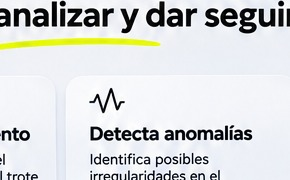
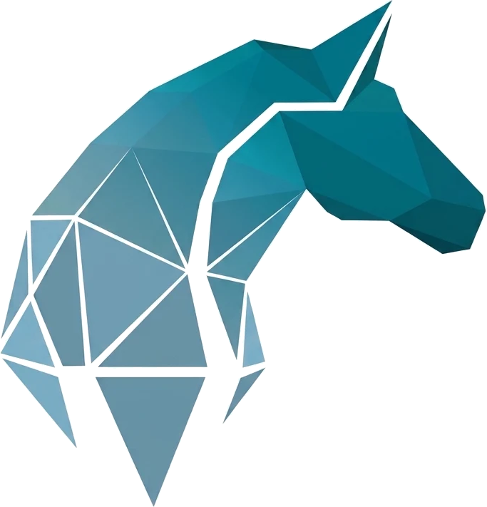
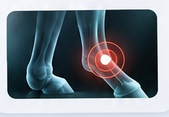
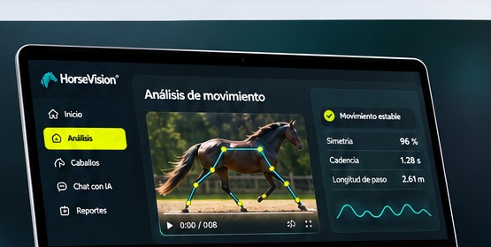

Analiza el movimiento
Sube un video y obtén un análisis biomecánico del trote con métricas claras.


HorseVision®PLATAFORMA EQUINA CON IA
Análisis biomecánico del movimiento con visión por computadora, métricas claras y un chat con IA especializada en caballos.
UNA PLATAFORMA, VARIAS HERRAMIENTAS
Sube un video y obtén un análisis biomecánico del trote con métricas claras.

Identifica posibles irregularidades en el patrón de movimiento de tu caballo.

Resuelve dudas sobre cuidado, entrenamiento, rendimiento y manejo de tus caballos.
Administra tus caballos y conserva su información y seguimiento en un solo lugar.

HORSEVISION EN UN SOLO LUGAR
SENCILLO Y DIRECTO
Graba el trote de tu caballo y carga el video en la plataforma.
La tecnología procesa el video y calcula información del movimiento.
Revisa métricas y visualizaciones para dar seguimiento a tu caballo.
Los resultados son informativos y no sustituyen la valoración de un profesional veterinario.
PLANES FLEXIBLES
Empieza con un caballo y amplía tu plan cuando lo necesites.
Básico
1 caballo
Profesional
Hasta 10 caballos
Ilimitado
Caballos ilimitados
PREGUNTAS FRECUENTES
Un video del caballo que cumpla con las indicaciones de grabación de la plataforma.
No. Sus análisis ofrecen información sobre el movimiento y no sustituyen la evaluación ni el diagnóstico de un veterinario.
Sí. Los planes se organizan según la cantidad de caballos que necesitas gestionar, desde uno hasta ilimitados.
Puedes hacer preguntas sobre caballos, su cuidado, entrenamiento, rendimiento y manejo.